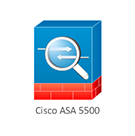

-

BàI 1: Cấu hình cơ bản
Bài lab này sẽ hướng dẫn thực tập một số kỹ năng làm quen với thiết bị firewall asa của cisco. Đầu tiên là chúng ta sẽ tìm hiểu về version của ios. Cấu hình cơ bản như: đặt hostname, cấu hình password, cấu hình ip cho interface trên thiết bị, security-level( cấp độ bảo mật).Cấu hình telnet, ssh cho asa từ xa. Ngoài ra sẽ tiến hành backup ios cho asa, load lại ios khi bị mất, recovery password cho thiết bị firewall asa.
right